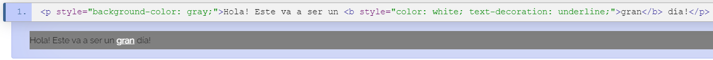

El sitio tiene como proposito conocer conceptos basicos de las hojas de estilo en cascada CCS y los frameworks CSS
CSS (CASCADING STYLE SHEETS)
Es un lenguaje de diseño grafico que permite dar un toque visual a las paginas web o interfaces creadas en HTML, permite editar atributos como
el color de fondo, el tamaño e la fuente, bordes, margenes, tamaño de imagenes, entre otros. De esta forma podemos crear paginas muy unicas y atractivas.

SELECTORES
Un selector es el medio para hacer una referencia a un grupo de uno o más elementos HTML, con el fin de aplicar a éste un conjunto de declaraciones CSS.
Existe una estructura con la que debes cumplir para usar un selector y está compuesta por el selector seguido del conjunto de declaraciones encerradas por llaves ("{}").
Selector de Tipo
Con este selector se pueden aplicar declaraciones a, por ejemplo, todos los párrafos (p), todos los ítems de listas (li) o todos los vínculos (a) de un documento.
Selector de ID
Corresponde con todos los elementos que tienen el valor especificado en su atributo ID. Este atributo se declara con el signo numeral ("#")

Selector de Clase
Es un concepto implementado por CSS que tiene como proposito agrupar declaraciones y aplicarlas al elemento que queramos. Esta clase se aplica mediante el atributo "class"
ATRIBUTO STYLE
Es la forma más fácil y directa de aplicar declaraciones de estilo a un elemento. Este atributo puede tener como contenido, cualquier número de
declaraciones de estilo, separadas unas de otras por un punto y coma (";").

Pero a pesar de toda su simplicidad e inmediatez, el uso de este método rompe de alguna manera uno de los principales beneficios de CSS:
la posibilidad de crear declaraciones de estilo que pueden ser reutilizadas en tantos elementos como sea posible, algo que se traduce en flexibilidad y portabilidad.
de León, D. P. (2015). Hojas de estilo en cascada (CSS). HOJAS DE ESTILO EN CASCADA (CSS). https://www.htmlquick.com/es/tutorials/css.html
FRAMEWORK CSS
Es una biblioteca de estilos que son usados para implementar en diseños de paginas web, esto nos permite aplicar estilos de una forma mas agil
y efiicaz. Unos de los frameworks mas usados actualmente son:

Frameworks CSS. (2014). Desarrollo Web. https://desarrolloweb.com/colecciones/frameworks-css